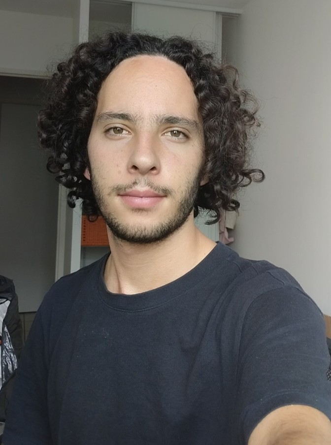

À propos
Alexandre Maignan
Sculpteur et dessinateur, je développe une pratique consacrée à l'étude du corps humain, de l'anatomie, des proportions et des volumes.

Je développe ma pratique artistique autour de l'étude du corps humain et de la recherche du volume. Le dessin et la sculpture constituent pour moi deux moyens complémentaires d'observer, de comprendre et de construire la forme.
Mon travail s'inscrit dans une approche figurative et académique, nourrie par l'observation de la sculpture classique et l'étude de l'anatomie.
Démarche artistique
Étudier le corps par le dessin et la sculpture
Ma pratique artistique est principalement consacrée à la sculpture figurative et au dessin d'étude. Je m'intéresse particulièrement à la construction du corps humain, à son anatomie, à ses proportions et à la manière dont les volumes peuvent être construits et observés.
Le dessin constitue un outil essentiel dans cette recherche. Les études au graphite, les études de figure et les travaux d'après la sculpture me permettent d'approfondir l'observation de la forme, de la lumière et de la structure du corps.
La sculpture prolonge cette recherche dans l'espace. Je travaille notamment la plastiline afin d'étudier le modelé, les volumes et les relations entre les différentes masses du corps.
Influences
Tradition classique et approche académique
Mon travail est nourri par l'étude de la sculpture antique et de la tradition classique. Je m'intéresse notamment à la représentation du corps humain, à l'équilibre des proportions et à la construction des volumes.
Cette approche repose avant tout sur l'observation et l'étude. Les sculptures antiques, les modèles académiques et les études anatomiques constituent des références importantes dans mon apprentissage.
Parcours
Un parcours entre art et sciences
En parallèle de ma pratique artistique, je poursuis une formation d'ingénieur à l' ENGEES — École nationale du génie de l'eau et de l'environnement de Strasbourg , dans le domaine du génie de l'eau et de l'environnement.
Cette formation scientifique constitue un autre aspect de mon parcours. Elle développe une approche fondée sur l'observation, l'analyse, la précision et la compréhension des structures, que je distingue de ma pratique artistique tout en les faisant évoluer parallèlement.
Travaux
Découvrir mon travail
Contact
Me contacter
Pour toute question concernant mon travail, mes recherches ou une éventuelle collaboration, vous pouvez me contacter directement.
alexandre.maignan.pro@gmail.com